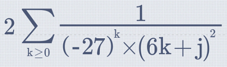

The Math Widget (MAW) for iOS is an interactive input method, enabling users to smoothly handwrite mathematical operations and equations, which can then be typeset and solved. Based on MyScript Math SDK, it displays its features in a user-friendly interface.
The Math Widget is designed to ensure a natural, handwriting-based HMI with real-time recognition and ink editing gestures. It also offers all the calculation features of a common scientific calculator, including exponential and trigonometric functions.
Here is a list of supported features:
